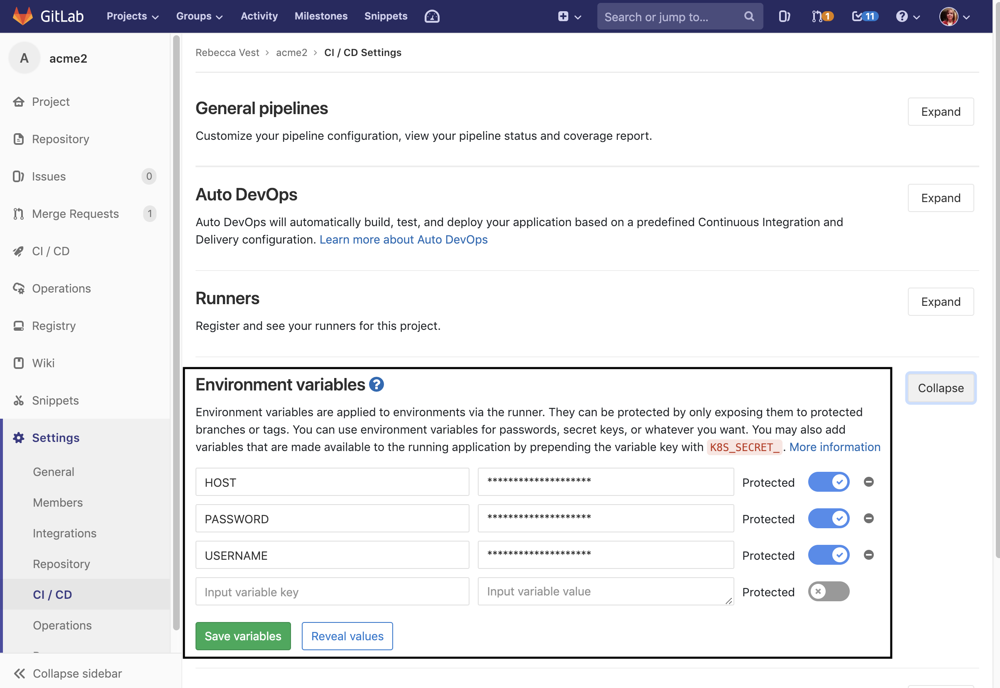

Deployment
By now you are wondering how to get your files to our web host. This process is called deployment. The most common deployment method is the usage of the File Transfer Protocol (FTP). What's FTP? Watch the video below.
So to use FTP you need an FTP client. Using an FTP client is relatively straight forward. You enter the URL of the FTP server and your account username and password. Once connected, you select the files you want to upload or copy to the web host.
Create FTP Account
- Log in to siteground.com
- Click the red "Go to cPanel" button
- Scroll far down to "Files"
- Under files click "FTP Accounts"
- Under "Add FTP Account" enter admin for the username.
-
Enter a valid password according to the requirements.
*Note: Record this for later use. - Remove ALL the text from the directory textbox
- Click the "Create FTP Account" button.
- Once finished you will see your new user under "FTP Accounts"
- Click the "Configure FTP Client" link to the right of your new user
-
This opens a panel below for you to get the FTP host and username.
*Note: Record these values for later use.
The downside to using an FTP client is that you manually have to upload your web site with your changes. It becomes tedious to upload every little change when you already have to push your changes to GitLab. That's when Continuous Deployment comes into play.
Continuous Deployment
What if every time you push to master that your web site is updated as well. Look no further than to Continuous Deployment (CD). Continuous deployment is an automated process to deploy your web site changes. GitLab and many other git providers have started providing Continuous Deployment.
To implement Continuous Deployment, you need a script file. A script file contains an ordered set of commands to tell GitLab how to deploy your changes. This file will be provided to you below. You also need to create environment variables.
Create Environment Variables
Environment variables are a dependency of the script file. Here is a short video to teach you about environment variables.
GitLab Environment Variables

Creation Steps
- Within GitLab, click Settings > CI/CD in the left sidebar.
- To the right, expand "Environment variables".
- Enter these variable names: HOST, USERNAME, and PASSWORD. These must be UPPERCASE.
- Enter the host, username, and password from the FTP account you created above.
- Click the "Save" button.
Deployment Script
Now you need to create the script file .gitlab-ci.yml in your master branch..gitlab-ci.yml
deploy:
script:
- apt-get update -qq && apt-get install -y -qq lftp
- lftp -c "set ftp:ssl-allow no; open -u $USERNAME,$PASSWORD $HOST; mirror -Rnev ./ ./public_html/acme --ignore-time --parallel=10 --exclude-glob .git* --exclude .git/"
only:
- master
Steps
- Go to GitLab and open your "acme" project.
- Once loaded click "+ CI/CD configuration" button above your file listing.
- Copy and paste the script content above.
- Click the green "Commit Changes" button at the bottom.
Test
- You need to ensure your deployment was successful.
- From the left sidebar, click CI/CD > Jobs
- It takes about a minute for the deployment to complete so you may see the status set as Running.
- Once finished you should see the most recent job status set as Passed.
- If the status is Failed, check that values of your environment variables are correct. You can then click the "Rerun" button to the far right of the failed job.
- Log in to siteground.com to find out your web address.
- Enter the URL into your browser's address bar with /acme/home.php at the end.
- Ensure your web site now has content.